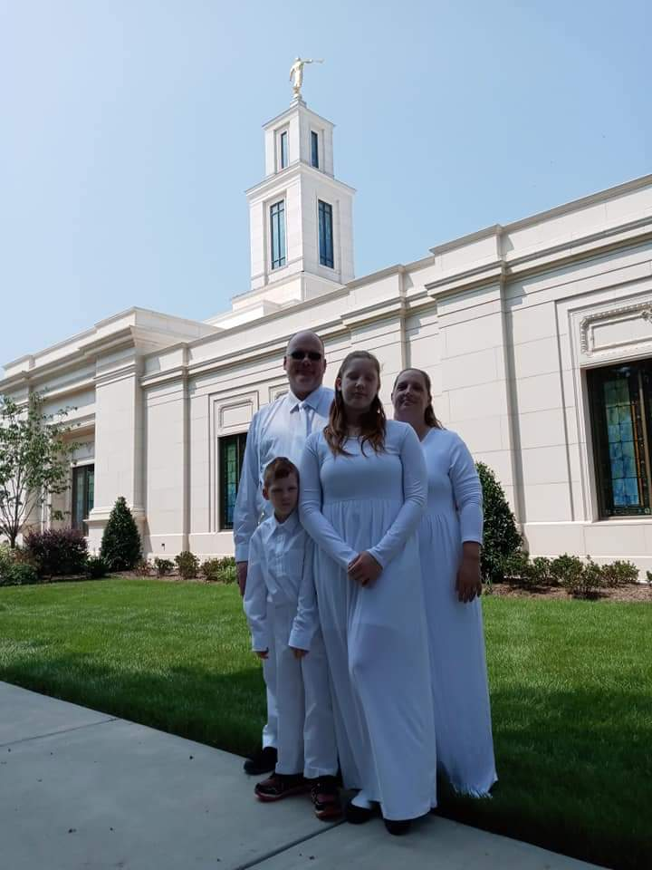
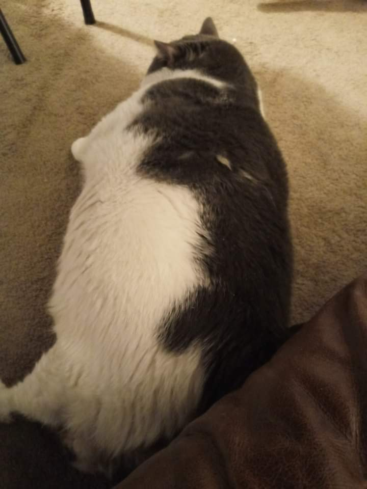

Courteney Shutt
I currently live in Richmond, Virginia in the United States. I am married with two children. My son is 8 years old and just got baptized and my daughter is 13 years old.
Our family just recently got sealed in 2021 in the Raleigh, North Carolina temple. I was lucky enough to have my Pathway teachers there to celebrate it with me. I have just recently completed my certficate in accounting and hoping to start my own business in bookkeeping and accounting. I manage a tax office so now I have more free time since Tax Day has come and gone! In my free time, I am usually taking my kids where they need to go, doing schoolwork, or playing computer games! I don't know hardly anything about coding or web design for that matter so I'm hoping to learn a lot from you guys and be able to make my own webite once I get my business up and running! Fun fact: We also have four cats one of which is close to 40 pounds! Yea, we have tried to make it go on a diet, but every time we do, the cat gains all of the weight back, but he is fat and happy so we leave him be. The other cats are normal size. Two cats are tuxedo cats(black and white) and we have one orange tabby cat.
 